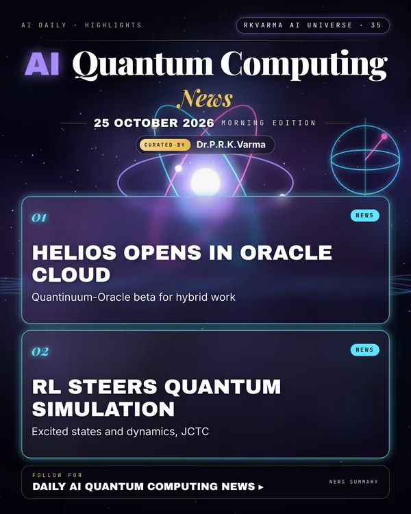

Latest updates · 25 October 2026
In the full issue →Quantum meets AI in the cloud: Quantinuum and Oracle open early access to Helios alongside GPUs, and RL helps simulate excited quantum states.
Research, industry & policy
- Quantinuum and Oracle open OCI Quantum AI Compute beta, Quantum Computing Report · 23 Oct 2026: Selected companies and universities can test hybrid quantum-AI workflows on the Helios trapped-ion machine inside Oracle Cloud Infrastructure.New today
Journals & preprints
- Reinforcement learning-assisted quantum simulation of many-body excited states and real-time dynamics, Journal of Chemical Theory and Computation · 8 Sep 2026: A deep Q-network guides a contracted quantum eigensolver so it can reach excited states and time evolution, not only ground states.New today
Why it matters
Early hybrid access lets teams find which chemistry and AI tasks really benefit from quantum hardware.

